Counting, movement, scaling, and repeated change
Use numbers to describe quantities, positions, fractions, and changes from one step to the next.
Numbers in context
A count, a debt, a recipe, and a changing population all involve numbers, but we calculate with them in different ways.
A number may describe an amount, a location, or a change. Its meaning determines the useful operations: we can add two distances, compare two temperatures, or calculate a share of a quantity. The examples throughout this chapter use invented situations.
Quantities, labels, and units
Seven might be a book count, a bus route, a temperature, or a change in score. The meaning and units determine what we can calculate.
What does the number represent?
“12” could mean 12 minutes, 12 dollars, or the label on a storage bin. Adding two waiting times can make sense. Adding the labels on two bins does not tell us how much they contain.
A number used as a label identifies something; a number used as a measurement tells us how much of a quantity is present. The distinction matters before any arithmetic begins.
Does “Bus 8” mean that the bus contains eight people? What extra information would a count of eight passengers give you?
Compare your reasoning
The route number is a label. A passenger count is a quantity. The same numeral can play either role, and the context tells us which.
The number systems fit inside one another
A set is a collection. The familiar number systems are sets of numbers. We use different names because different situations require different kinds of values.
| System | Meaning | Examples |
|---|---|---|
| Natural numbers, \(\mathbb N\) | Positive counting numbers | 1, 2, 3, … |
| Integers, \(\mathbb Z\) | Whole numbers, zero, and their negatives | …, −2, −1, 0, 1, 2, … |
| Rational numbers, \(\mathbb Q\) | Ratios of integers with a nonzero denominator | 3/8, −5/2, 0.6, 7/1 |
| Real numbers, \(\mathbb R\) | All positions on the number line, rational or irrational | \(\sqrt2\), π, and all the numbers above |
Here the natural numbers start at 1. The term whole numbers usually means 0, 1, 2, … . The classification tasks use the four listed systems, so zero’s smallest listed system is the integers.
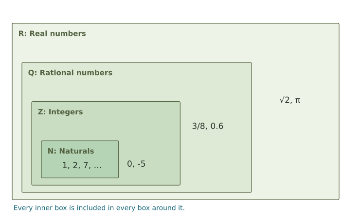
The symbol \(\subset\) means “is contained in.” Every integer is rational because it can be written over 1: −5 = −5/1. Every rational number is real. The fraction 3/8, for example, is rational but is not an integer.
We classify a number by the smallest set in the chain that contains it. For example, \(8/4=2\) is natural, although it is written as a fraction. A value such as \(\sqrt2\) is real but lies outside the rational numbers.
Classify −6, 0.25, and 10/2 by their smallest listed systems.
Compare your reasoning
−6 is an integer. 0.25 = 1/4 is rational but not an integer. 10/2 = 5 is natural. All three are also real.
Addition describes a signed change
A number line gives zero a location and fixes which direction is positive. On a horizontal line, right is positive and left is negative. A signed change tells us how far to move and which way.
Start, then make the change
For −3 + 5, start at −3 and move 5 units right. The end position is 2. For 4 + (−7), start at 4 and move 7 units left. The end position is −3.
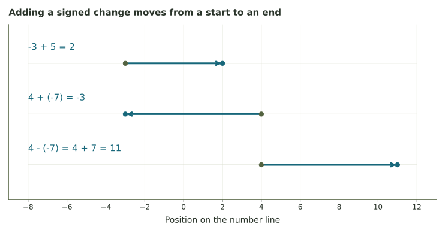
Subtracting a number means adding its opposite. Therefore 4 − (−7) = 4 + 7 = 11. The minus sign in “−7” is part of the number being subtracted; taking its opposite gives +7.
Fractions can also describe positions on the number line. To calculate \(1/3+1/2\), express both distances in sixths: \(2/6+3/6=5/6\). The common denominator gives us pieces of the same size.
A submarine is at −45 meters relative to the surface and rises 18 meters. Where does it end?
Compare your reasoning
−45 + 18 = −27 meters. The submarine is still 27 meters below the surface.
Position and change
If a temperature rises from −5 to 3 degrees, the final temperature is 3 degrees. The change is +8 degrees. The temperature is 3 degrees; the increase is 8 degrees.
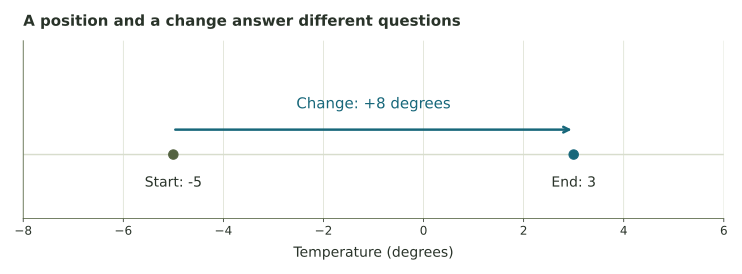
Follow several changes in order
A hiker starts at −20 feet relative to sea level, climbs 35 feet, then descends 8 feet. The positions are −20, 15, and 7 feet. The final position is 7 feet; the net change from the start is +27 feet.
Negative values depend on the choice of units and reference point. A negative elevation can mean below sea level. A negative bank balance can mean an amount owed. A negative count of books on a shelf would usually signal that the chosen model no longer fits the situation.
A game score changes from 14 to 9. What is the change, and how would you write the update?
Compare your reasoning
The change is 9 − 14 = −5. Write 14 + (−5) = 9.
Fractions name shares and locations
In 3/4, the denominator 4 says that one whole is divided into four equal parts. The numerator 3 says to take three of those parts. For a length, 3/4 also marks a position between 0 and 1.
Different fractions can name the same share. Multiply the numerator and denominator by the same nonzero number to keep the value unchanged: 1/2 = 2/4 = 3/6 = 50/100.
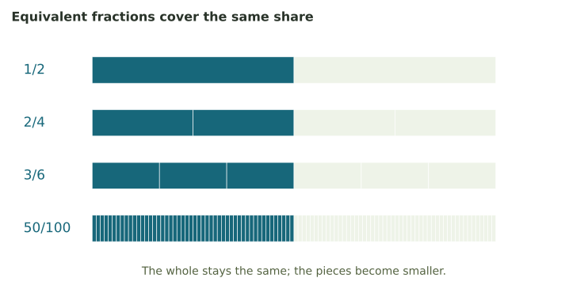
Two ways to check equivalence
3/4 and 9/12 are equal because both numerator and denominator were multiplied by 3. You can also cross-multiply: 3 × 12 = 36 and 4 × 9 = 36.
For 2/5 and 7/15, the cross-products are 2 × 15 = 30 and 5 × 7 = 35. They are different values.
In symbols, a/b = c/d exactly when ad = bc, provided b and d are nonzero. Division by zero is undefined. To simplify 18/24, divide both parts by their greatest common factor, 6: the result is 3/4.
A decimal is another way to write a share. 0.6 means six tenths, so 0.6 = 6/10 = 3/5. A percentage uses hundredths: 0.6 = 60/100 = 60%.
Are 6/10 and 9/15 equivalent? Show one check.
Compare your reasoning
Both simplify to 3/5. Their cross-products also agree: 6 × 15 = 90 and 10 × 9 = 90.
Adding, multiplying, and dividing fractions
To add fractions, first express them in the same-sized pieces. One third and one fourth are different units; twelfths let us count both together.
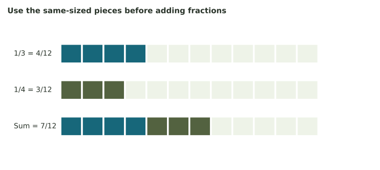
Multiplication finds a fraction of an amount. Taking two thirds of a recipe that uses three quarters of a cup means multiplying the two fractions.
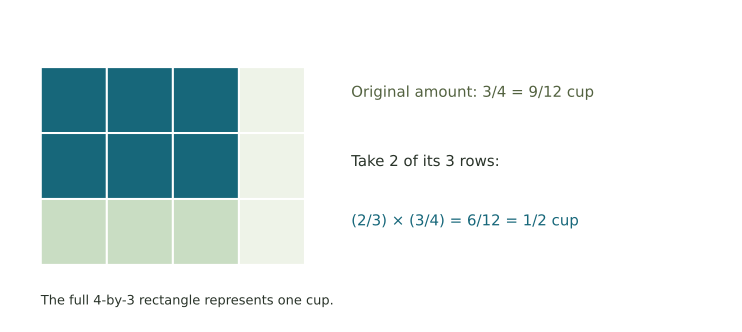
Division can count portions. If each portion is 1/3 cup, how many fit into 6 cups? There are three thirds in each cup, giving 18 portions.
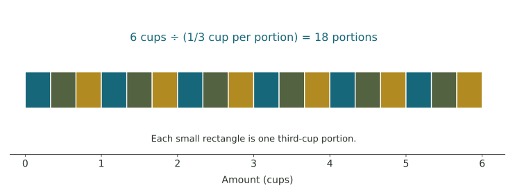
In general, dividing by a nonzero number is multiplying by its reciprocal. The reciprocal of 2/3 is 3/2 because their product is 1. For example, (5/6) ÷ (1/3) = (5/6) × 3 = 5/2.
Find 1/2 + 1/4 and (1/2) × (1/4). Why are the results different?
Compare your reasoning
The sum is 2/4 + 1/4 = 3/4. The product is 1/8: one half of one fourth. Combining two amounts and taking a fraction of an amount are different operations.
Multiplication describes a scale factor
A factor tells us how a value is scaled. Multiplying a positive amount by 2 doubles it. Multiplying by 1/2 halves it. The factor determines whether the distance from zero increases or decreases.
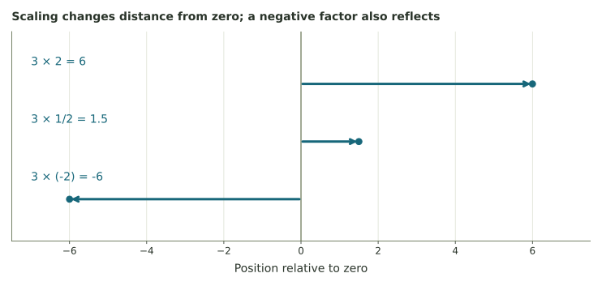
For a positive amount, a factor greater than 1 makes it larger; a factor between 0 and 1 makes it smaller; 1 leaves it unchanged; 0 gives zero. A negative factor reflects across zero while scaling the distance.
Two negative signs as two reversals
Multiplying by −1 reflects a point across zero. Applying that reflection twice returns to the original side, so (−1)(−1) = 1. In (−2)(−5) = 10, the negative value is scaled by 5 and reflected again.
For a negative start, multiplying by 2 moves farther from zero but lower on the number line: −4 × 2 = −8. The growth comparison above assumes a positive amount.
Without calculating exact results, compare 9 × (1/3) and 9 ÷ (1/3) with 9.
Compare your reasoning
Multiplying by 1/3 gives less than 9. Dividing by 1/3 is multiplying by 3, giving more than 9.
A percentage change becomes a multiplier
Percent means “per hundred.” A 10% increase keeps the original 100% and adds another 10%, giving 110% = 1.10 times the old amount. A 10% decrease keeps 90%, so its factor is 0.90.
Use p = 10 for 10%, or a multiplier of 1.06 for a 6% increase.
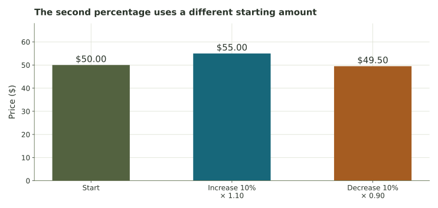
Adding a fixed amount and applying a fixed percentage can agree for one step and then differ. Starting at 100, adding 20 gives 120, 140, 160. Growing by 20% gives 120, 144, 172.80, because each new 20% is taken from the current amount.
A quantity of 80 increases by 25%. What factor applies, and what is the new quantity?
Compare your reasoning
The factor is 1.25. The new quantity is 80 × 1.25 = 100. The increase itself is 20.
Powers, square roots, and the order of operations
A power records repeated multiplication. The expression 3² means 3 × 3, while 3³ means 3 × 3 × 3. The small raised number is an exponent. It counts how many copies of the base are multiplied.
The square-root sign asks for the nonnegative number whose square gives the number inside. Thus √9 = 3, √0 = 0, and √(1/4) = 1/2.
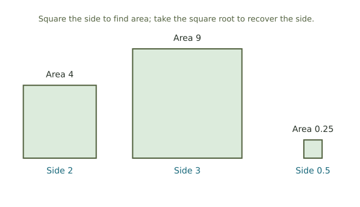
Keep the sign and the grouping visible
(−4)² = (−4)(−4) = 16, and √16 = 4. Both 4 and −4 solve x² = 16, but the symbol √16 names only the nonnegative choice.
Compute 2 + 3 × 4 by multiplying first: 2 + 12 = 14. With parentheses, (2 + 3) × 4 = 5 × 4 = 20.
Work inside grouping symbols first, then evaluate powers and roots, then multiplication and division from left to right, then addition and subtraction from left to right. A fraction bar also groups its numerator and denominator.
The distributive property says a(b + c) = ab + ac. If a movie club charges 12 dollars plus 4 dollars per visit, the cost for n visits is 12 + 4n. Three people each making n visits pay 3(12 + 4n) = 36 + 12n dollars in all.
Evaluate 3(2 + 5) and 3 × 2 + 3 × 5. Then find \(\sqrt{(-3)^2}\).
Compare your reasoning
Both distributive expressions give 21. The squared quantity is (−3)² = 9, so its nonnegative square root is 3.
An exact number and a decimal approximation differ
A rational number can be written as a ratio of integers. Its decimal ends or eventually repeats a block: 3/4 = 0.75, while 1/3 = 0.333… with the 3 repeating forever.
An irrational number is real but cannot be written as a ratio of integers. Its decimal never ends and never settles into a repeating block. √2 and π are examples.
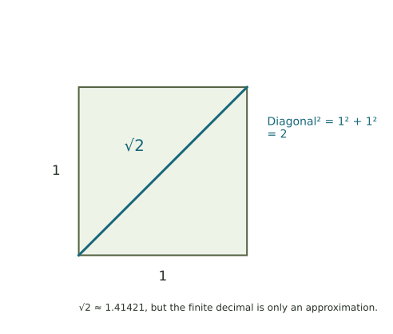
For a nonnegative integer, its square root is rational exactly when the integer is a perfect square, such as 0, 1, 4, 9, or 16. The qualification “integer” matters: √(1/4) is rational too.
Exact values and calculator displays
√2 ≈ 1.41421. The sign ≈ means “approximately equal.” The finite decimal 1.41421 is rational; it is not exactly √2. The exact value determines whether a number is rational or irrational.
Are √25 and √6 rational or irrational? Is the finite decimal 2.44949 irrational?
Compare your reasoning
√25 = 5 is rational. √6 is irrational because 6 is a nonnegative integer that is not a perfect square. The finite decimal 2.44949 is rational, even if it is being used to approximate √6.
A glimpse beyond the real number line
No real number squares to −1: the square of a real number is never negative. The complex numbers extend the real numbers by introducing i, with i² = −1.
A number such as 3 + 2i has two parts. We can draw it at the point (3,2): three units along the real direction and two along the imaginary direction. The vertical axis is called the imaginary axis.
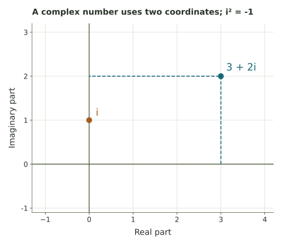
This extends the tower to \(\mathbb R\subset\mathbb C\), where \(\mathbb C\) denotes the complex numbers. The classification tasks in this week’s assignments use the four real-number systems introduced above.
What are the real and imaginary parts of 5 − 2i?
Compare your reasoning
The real part is 5 and the imaginary part is −2. Its point is (5,−2).
Recursion: use the current value to find the next
A sequence is an ordered list. A recursive rule tells us how to make a new term from an earlier one. We need both a starting value and an update rule.
Starting from a recursive rule
Let a₀ = 4 and aₙ₊₁ = aₙ + 3. The small numbers are step labels. a₀ means the starting value, a₁ the value after one update, and a₂ the value after two updates. The expression n + 1 means the next step after n.
The rule says: take the current value and add 3. Starting from 4 gives 4, 7, 10, 13, 16, 19.
| Step n | Add 3 each step | Multiply by 1.5 each step |
|---|---|---|
| 0 | 4 | 4 |
| 1 | 7 | 6 |
| 2 | 10 | 9 |
| 3 | 13 | 13.5 |
| 4 | 16 | 20.25 |
| 5 | 19 | 30.375 |
In the second column, the difference between consecutive values stays at 3. In the third, the ratio stays at 1.5. Both start at step 0, before any updates have happened.
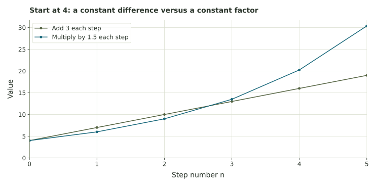
A direct formula can jump to a particular step. With start a₀ and fixed addition d, aₙ = a₀ + nd. With start b₀ and fixed factor r, bₙ = b₀rⁿ. The exponent n counts the multiplications; the subscript n labels the term.
For the examples above, a₅ = 4 + 5(3) = 19 and b₅ = 4(1.5)⁵ = 30.375. A table, a recursive rule, and a direct formula describe the same sequence in different ways.
Start at 9 and subtract 2 at each update. List the start and four updates. What is the step-4 value?
Compare your reasoning
The list is 9, 7, 5, 3, 1. The step-4 value is 1. The starting value and four updates give five terms.
What repeated rules can describe
Repeated multiplication can produce growth, decay, or alternating signs. A factor of 1/2 gives decay; a factor of −1/2 also reverses the sign each time.
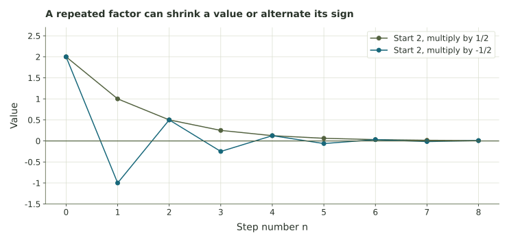
With a positive start and a constant factor greater than 1, repeated multiplication eventually exceeds a fixed positive addition, if the rules continue indefinitely. A population, however, may encounter limits on space or resources.
When a model stops fitting
If a car’s model value drops by 1,500 dollars every year, the arithmetic can eventually become negative. At that point, a constant annual decrease is no longer a useful model of the car's value.
An additive rule changes a quantity by a fixed difference. A multiplicative rule changes it by a fixed factor. Starting from the same amount, their short-term results may be close while their longer-term results diverge.
Next week we will use fractions to describe probabilities. Later, we will revisit recursive rules when we study feedback.
A model starts with 6 liters and subtracts 2 liters each day. What happens after day 3? Can the physical amount follow that rule forever?
Compare your reasoning
The model values at days 0 through 3 are 6, 4, 2, and 0 liters. Continuing the arithmetic would give negative amounts. An actual stored amount cannot keep following that rule after the supply is exhausted.
Further practice
Practice these ideas by classifying numbers, tracing signed changes, comparing fractions, and calculating recursive sequences. The examples in the text provide the methods needed for those problems.
Further reading: OpenStax on real numbers and square roots.